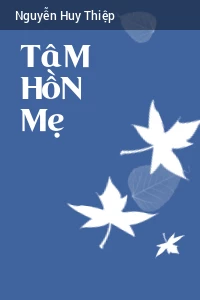
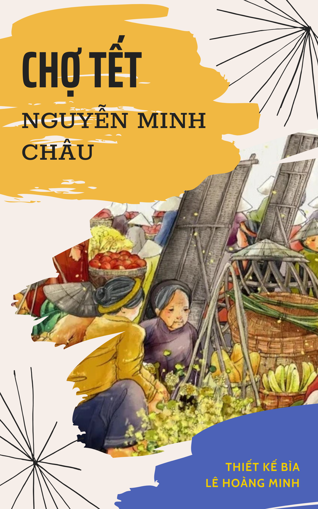
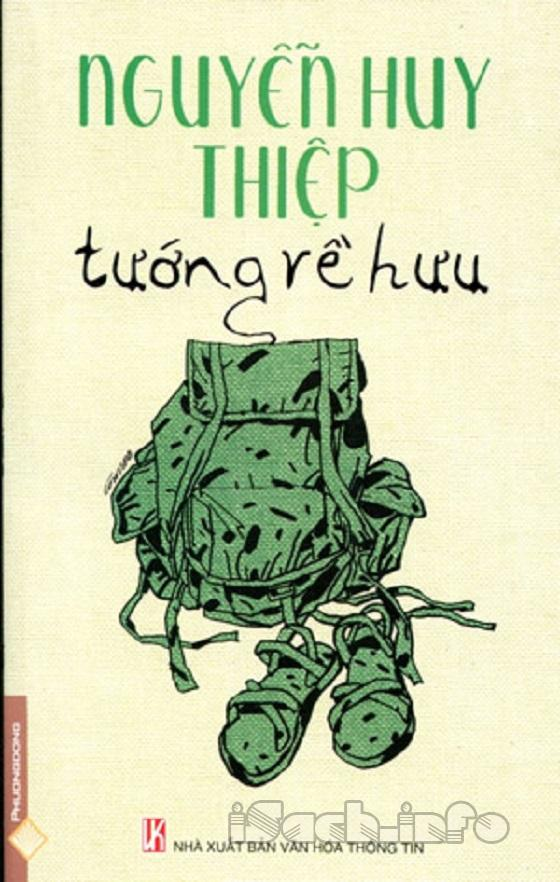
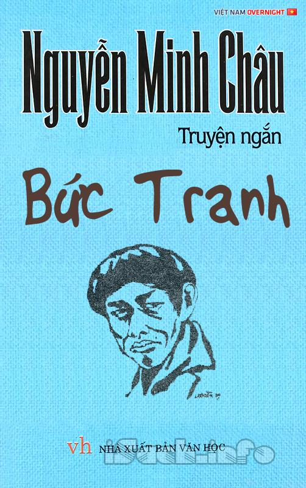

Nguyễn Huy Thiệp
Là nhà văn đương đại Việt Nam về thể loại kịch, truyện ngắn và tiểu thuyết với góc nhìn đổi mới và sáng tạo.

Đọc thêm
Nguyễn Minh Châu
Một nhà văn có sức ảnh hưởng lớn tới nền Văn học Việt Nam trong giai đoạn chiến tranh và thời kì đổi mới.

Đọc thêm
Cảm nghĩ của em về tác phẩm "Tâm hồn mẹ"
"Một tác phẩm mang đến cho người đọc những cảm xúc sâu lắng và suy tư về tình mẫu tử thiêng liêng."
Tác giả: Vũ Tiến Thành
Đọc thêm
Cảm nghĩ của em về tác phẩm "Chợ Tết"
"Cho dù thế nào đi chăng nữa, tết đối với mỗi người có lẽ vẫn là một dịp vô cùng ý nghĩa để trở về với gia đình, quê hương, để tìm kiếm những điều bình dị mà đong đầy hạnh phúc."
Tác giả: Lê Hoàng Minh
Đọc thêm
Cảm nghĩ của em về tác phẩm "Tướng về hưu"
"Các nhân vật trong truyện đều là những con người cô đơn, mang mặc cảm ấy như một bản án từ khi sinh ra. Mối quan hệ gia đình và xã hội tưởng chừng bền chặt nhưng thực chất lại mong manh, dễ đứt."
Tác giả: Hà Đăng Huy
Đọc thêm
Phân tích tác phẩm "Bức tranh"
"Qua lời “tự thú” trong bức chân dung tự họa của một họa sĩ khi nhìn nhận lại những lỗi lầm của bản thân mình, nhà văn đã gửi đến chúng ta thông điệp về sự dũng cảm đối mặt, về vẻ đẹp của sự bao dung, nhân hậu của con người."
Tác giả: Phạm Quốc Anh
Đọc thêm